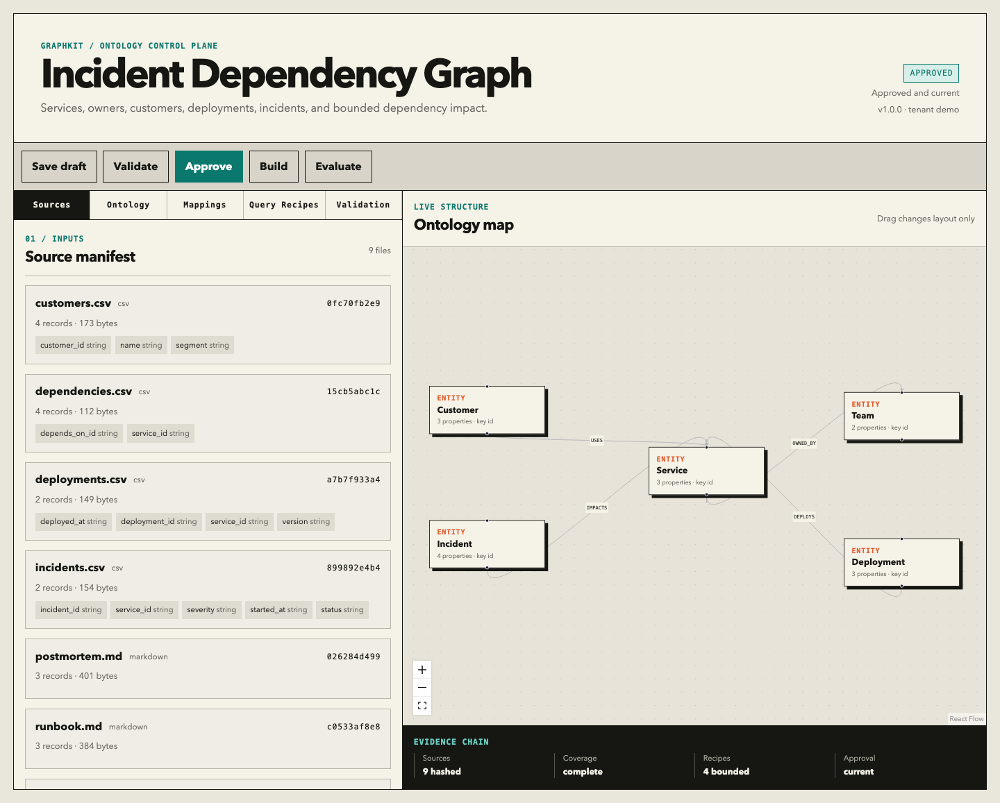

The UI offered a handful of curated questions whose answers were already embedded in the browser.
Implemented toolkit / governed knowledge systems
Make GraphRAG prove it deserves the graph.
I rebuilt a fixed seller-ontology demo into a local-first conversion workbench: profile real sources, let a coding agent propose the ontology, require human approval, compile deterministic graph IR, route only through safe recipes, and publish the failures alongside the wins.
Local product implemented and tested
Hosted Neo4j and provider certification still gated
- Structured coverage
- 100%
- Held-out cases
- 80
- Incident routing
- 40 / 40
- Seller routing
- 37 / 40
- Decision
- Use GraphRAG when the path is part of the answer. Keep vector RAG as the default for narrative retrieval.
- What the evidence says
- The local compiler and safe-routing contract work across two domains. Three seller routing failures remain visible.
- What it does not say
- No committed artifact yet proves GraphRAG beats vector RAG on answer quality. OpenAI, Ollama, AuraDB, and measured latency remain release gates.
Prototype critiqueWhy the first demo was not evidence
A fixed question with a fixed output cannot validate retrieval.
Cypher was displayed, but the page did not establish that executing it produced the answer.
The vector comparison was deterministic simulation, not retrieval from the same governed source.
A quality number appeared without a versioned reference answer, retrieval trace, or reproducible judge artifact.
The useful parts survived: explicit ontology, bounded tenant-aware Cypher, provenance, and the belief that relationship-dependent questions deserve a different retrieval path.
Reusable workflowOne contract, several tools
AI proposes. A person approves. The compiler decides what can run.
01 / Profile
Inspect the evidence
Hash files, infer fields, sample values, discover text sections, and warn on potential sensitive data.
02 / Propose
Use any coding agent
Codex, Claude Code, Cursor, or another repository-aware agent proposes one schema-backed GraphSpec.
03 / Review
Refine visibly
Edit node types, relationships, mappings, and recipes through forms with a live ontology canvas.
04 / Approve
Bind meaning to sources
Semantic and source hashes form the build gate. Dragging layout does not alter approval.
05 / Compile
Create neutral graph IR
Nodes, relationships, chunks, and exact provenance exist before any provider or Neo4j write.
06 / Evaluate
Keep losses visible
Graph, vector, hybrid, unsupported, safety, and paraphrase cases produce a versioned report.

ArchitectureTrust boundaries first
The model never receives an unrestricted database capability.
Inputs
Local sources
CSV, JSON, Markdown, and text remain local until a cloud provider is explicitly chosen.
Contract
GraphSpec
Pydantic emits the same JSON Schema for the CLI, editor, coding agents, and structured model outputs.
Compiler
Deterministic IR
Every structured field is mapped or ignored with a reason. Text facts need an exact source quote.
Storage
Neo4j + vectors
Tenant-scoped idempotent merges and model/version-specific index namespaces prevent silent reuse.
Runtime
Approved recipes
AI selects a route and typed parameters. It cannot invent executable Cypher.
Evidence
Case-level artifacts
Provider, model, ontology, data, commit, route, parameters, citations, failures, and latency travel together.
Worked examplesGraph, vector, hybrid, unsupported
The route is a product decision, not a GraphRAG marketing claim.
“Which customers are exposed to INC-104?” traverses incident, service dependencies, customer usage, and ownership. The path is bounded at three hops.
“Summarize the postmortem mitigation” retrieves narrative text. Modeling every mitigation sentence as graph structure would add cost without obvious value.
Ownership comes from exact graph relationships; response guidance comes from cited runbook chunks.
INC-777 does not exist. The system returns no recipe, no Cypher, and no score instead of guessing.
Measured resultsNo predetermined winner
The first valid evidence is smaller—and more useful—than the original claim.
22 mapped fields, 17 nodes, 17 relationships, 36 chunks, and zero unresolved structured fields.
20 mapped fields, 33 nodes, 53 relationships, 87 chunks, and zero unresolved structured fields.
40 of 40 reviewed cases passed the deterministic recipe-selection and parameter suite.
37 of 40 passed. The three failures remain in the case-level artifact and constrain the claim.
These results do not measure answer correctness. Provider-backed certification will add exact entity/value scoring, citation validation, the same synthesis model for graph and vector, and measured latency. No metric ships unless CI can trace it to the evidence manifest.
Security and governanceFail closed by design
The ontology is governed before it becomes executable.
Semantic or source changes make approval stale. Draft history is retained locally.
Writes, procedures, unbounded traversal, missing tenant predicates, missing numeric limits, and undeclared parameters are rejected.
Loopback binding, same-site HttpOnly session cookie, per-launch CSRF token, and no telemetry.
Read-only routes only, synthetic data, rate limits, no source uploads, and no local editing API.
Decision and roadmapWhere complexity earns its keep
GraphRAG is an evaluated option, not the default answer.
Use it for dependency impact, ownership, entitlement, supply-chain, configuration, and policy questions where relationships and paths must remain inspectable. Use vector RAG for summary and explanation. Use hybrid retrieval only when both are necessary.
The next release gates are provider-backed OpenAI and Ollama runs, executed Neo4j and vector traces, reference-answer scoring, AuraDB with synthetic samples, and deployment of the read-only Python API. PDFs, live connectors, unrestricted Text2Cypher, public uploads, and multi-user hosting remain intentionally deferred.